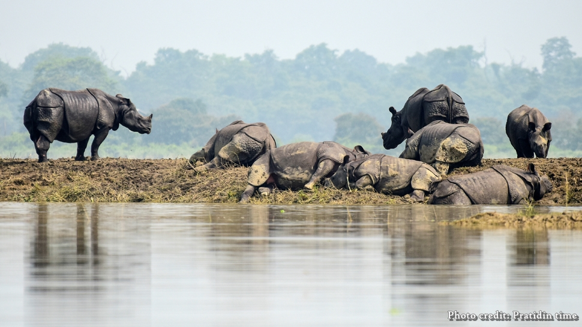

As soon as the monsoon hit the Indian subcontinent, the news of the ravaging flood started coming from Assam. Till now, the devastating flood has claimed the lives of 73 people and affected as many as 40 Lakhs people throughout the state. Not only that, about 90 per cent of Kaziranga National Park has also been submerged and 86 animals have died, including 6 rhinos. The National Park Authorities have said that the 99 anti-poaching camps have also been submerged in the flood.
Yet, the deluge is considered as one of the most essential factors for the survival of this UNESCO World Heritage Site. To understand the reason behind this contradictory affair, you have to understand the role of the floods in the ecosystem of Kaziranga. It will also help you to understand how these devastating floods can become a problem, and whether it can be fixed.
The Role of Floods In The Ecosystem of Kaziranga
Due to its numerous rivers, Assam is traditionally flood-prone. Being sandwiched between the Karbi Anglong Hills and Brahmaputra River, the Kaziranga National Park is not an exception. However, the survival of the entire ecosystem depends on this annual flooding.
Unlike other forests, The Kaziranga National Park has a riverine ecosystem. That means, without water, this ecosystem will not survive. The entire forest area of Kaziranga National Park is created with the alluvial soil deposit of the Brahmaputra river as well as its tributaries.
The annual floods replenish the water bodies of Kaziranga and keep the balance of the landscape on point. It cleans the unwanted plants and helps the national forest to remain a grassland. Without the regular flood, the whole ecosystem will tumble and the Kaziranga would become a woodland.
Many experts even believe that the floods are also an astounding example of natural selection. Every year, the deluge takes the lives of several animals, especially the weak and old ones letting the one with strength survive.
Can The Deluge Become a Threat To Kaziranga?
Even though the experts require the area to become inundated each year, the current floods are making them worried about the future of the national forest. According to the experts, previously a devastating flood used to occur only once in a decade or two. Nowadays, they are occurring almost every other year. The current one is being considered as the sixth most devastating flood since 1988.Barring the year 2018, every year between 2016 and 2020 has witnessed a massive flood that killed and injured hundreds of different animals.
Animals generally adjust to increasing levels of water naturally. However, when the water level hits a certain point, they seek refuge in the highlands. Previously, they moved towards Karbi Anglong Hills. Now, in between these two lies the national Highway 37.
Even though there are nine wildlife corridors for the animals, each of them is choked by traffic. The mushrooming of the restaurants and hotels and the expansion of the tea gardens have not helped the situation either.
All these pushed the animals to choose the higher grounds of the southern section of the national park. However, if necessary actions are not taken to preserve the animals, a major flood can cause serious loss of wild lives.
This year alone, 14 hog deer have lost their lives in road accidents and several deer and boar have drowned.
Why Devastating Floods Are Happening So Frequently
Deforestation in the catchment area, as well as the release of the water of the upstream dams, might be the contributory factor of such high floods. However, the effects of global warming and the impacts of climate change cannot be overlooked entirely.
How Helpful Are The Artificial Highlands?
Artificial highlands are one of the mitigating measures that the government is taking since a couple of decades. While these highlands have effectively reduced the number of casualties, these are far from the permanent solution to the problem.
Overall, there is no permanent solution in sight. Even though a proposal about constructing a 35 Km long flyover to the Karbi Hills has been proposed by the center, it will take a long time to come into effect. Till then, emphasis on enhancing the security of the animal corridors and offering a safe passage to the animals to Karbi Hills seems to be the only way to keep the flood death-toll on the lower level.
You can donate to the Chief Minister Relief Fund. Your contribution can transform lives.